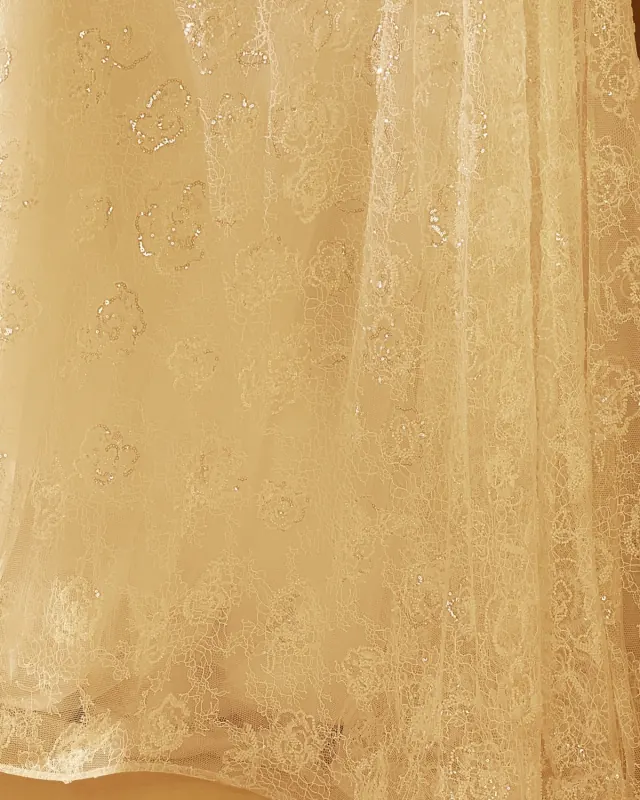
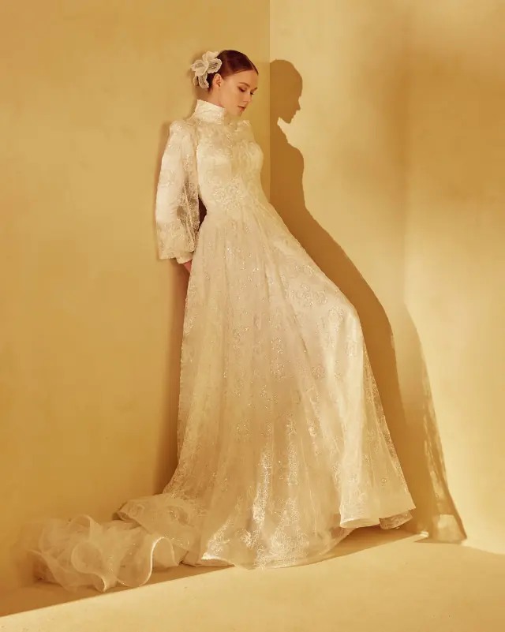

12 · Kapak konusu · Kupon dantel
Lavinya
Her motifi siluetin en zarif noktasına yerleştirilen bir dantel. Zamansız, kapalı ve büyüleyici.
Tasarım: Ma'shuk Bridal Studio · Satın alma ya da kiralama

Kupon dantel, haute couture dünyasında nadir bulunan, belirli bir kalıp ya da simetri üzerine doğrudan dokunan, üzerinde el işçiliği detaylar taşıyan en özel dantel türlerinden biridir.
Metreyle satılan standart dantellerden farkı şudur: her motif, tam olması gereken yere, siluetin en zarif noktasına oturacak biçimde tasarlanır. Lavinya bu kusursuzluktan doğdu.
“Kupon dantelin kusursuzluğuyla hayat bulan, zamansız ve büyüleyici bir gelinlik.”



Künye
- Dantel
- Kupon dantel, el işçiliği detaylar
- Kesim
- Uzun kol, yüksek yaka, kapalı siluet
- Seçenek
- Satın alma ya da kiralama
- Görüşme
- Yalnız randevu ile, Dragos atölyesinde